01
Glanceable by design
The rider cannot look away for long, so the dashboard needed clear hierarchy and fast recognition.
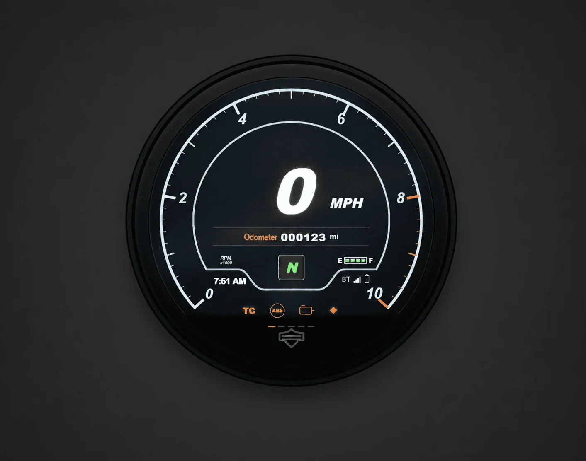
A UX case study on AI-assisted prototyping for a 4-inch Harley-Davidson Sportster S dashboard
I approached this project as an experiment in learning how to work with AI critically. My goal was not to create a perfect prototype, but to understand how far vibe coding could go when the interface was not a simple website or mobile app.
Role
UX Designer / AI-assisted prototyper
Tools
Claude, Codex, ChatGPT
Focus
Embedded UI, state machines, interaction logic
Project Challenge
The prototype was a 4-inch digital motorcycle dashboard. That meant I had to think about rider attention, physical controls, safety rules, and what should happen when several system events happen at once.
01
The rider cannot look away for long, so the dashboard needed clear hierarchy and fast recognition.
02
The UI had to work through motorcycle controls like Page, Home, Trip, and D-pad input instead of touch.
03
Some features, especially Settings and Diagnostics, needed to lock or change behavior while riding.
04
Low fuel, incoming calls, and prompts needed interruption rules so the rider always sees the highest-priority event.
05
The interface only had five main sections, but the logic underneath included states, triggers, guards, overlays, and edge cases.
My Process
I treated vibe coding as a learning loop, not a shortcut. Each prompt became a design decision, and each failure told me what I had not explained clearly enough yet.
I studied the dashboard structure, rider context, and safety constraints.
I mapped sections, controls, states, overlays, and guard rules.
I used AI to create working HTML, CSS, and JavaScript prototypes.
I tested the output with checklist criteria instead of trusting the visual result.
I updated prompts and prototype logic based on what failed.
back to analyze
System Logic Under The Surface
Once the prototype became interactive, I had to define the invisible rules behind the interface. These were the concepts that made the project more like an embedded HMI than a normal website. Every tag below shows up in the simulator further down the page.
State
A state is where the system currently is, like Home, Navigation, Media, Vehicle, Settings, or Settings Locked.
Transition
A transition is the move from one state to another, such as pressing Page to move from Home to Navigation.
Trigger
A trigger is what causes the system to change, like a button press, a low-fuel event, or an incoming call.
Guard
A guard rule decides whether a change is allowed, like blocking Settings while the motorcycle is moving.
Overlay
An overlay interrupts the normal screen when something important happens, such as Low Fuel or Incoming Call.
Edge case
An edge case is the situation that breaks the simple version of the design, like receiving a call while another prompt is active.
Iteration Process
At the beginning of this project, I thought the hardest part would be building the dashboard interface. After three iterations, I realized the bigger challenge was learning how to communicate system logic clearly enough for AI to build it without guessing.
Each iteration taught me something different. The first showed me the limits of a generic prompt. The second helped me understand the cost of long chats, token limits, and visual replication problems. The final iteration with Codex gave me the strongest result, but it also proved that AI still needs detailed guidance, testing, and human decision-making.
Same frame, same scale — switch between the three attempts and the bike itself.
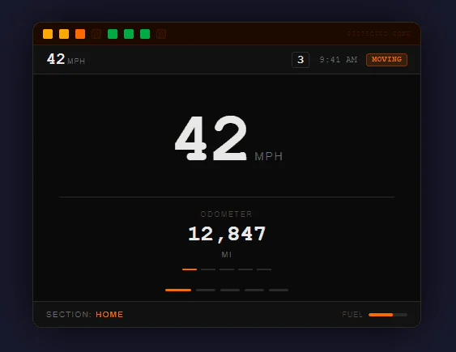
Iteration 1: useful for testing logic direction, but not visually close enough.
Iteration 1 / Claude Sonnet 4.6
For the first iteration, I gave Claude all of my motorcycle dashboard logic documents and asked it to create a prototype. My main mistake was making the prompt too general and expecting the AI to understand the full system at once. Claude understood some of the logic, but the visual design was weak. The result felt more like a logic test than a realistic Harley-Davidson dashboard prototype.
Iteration 1: useful for testing logic direction, but not visually close enough.
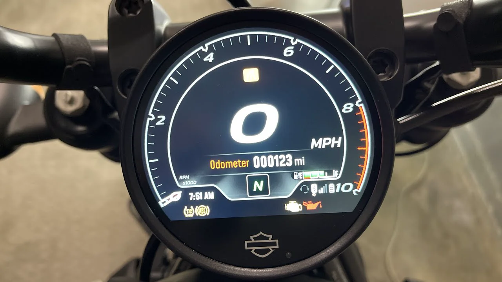
Reference: actual Harley-Davidson dashboard home-screen proportions.
Prompting is part of the design process. I should have asked Claude to plan first, break the project into smaller parts, and ask me questions before making decisions.
Iteration 2 / Claude Opus 4.7
For the second iteration, I tried to make the dashboard look closer to the real Harley-Davidson Sportster S display. At first, I continued from the previous Claude chat, but the chat had become too long, so Claude started losing context and using tokens quickly. I then started a fresh chat with Opus and worked more step by step. The result improved and felt more like a circular motorcycle dashboard, but it still did not fully match the reference.
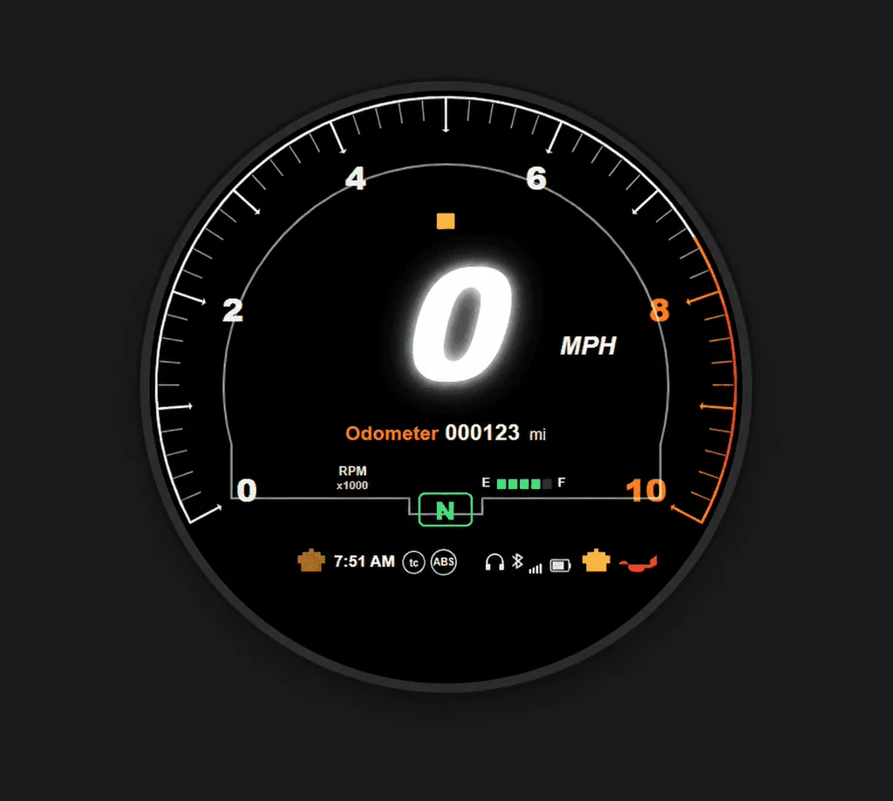
Iteration 2: closer circular structure, but the lower notch and proportions still needed work.
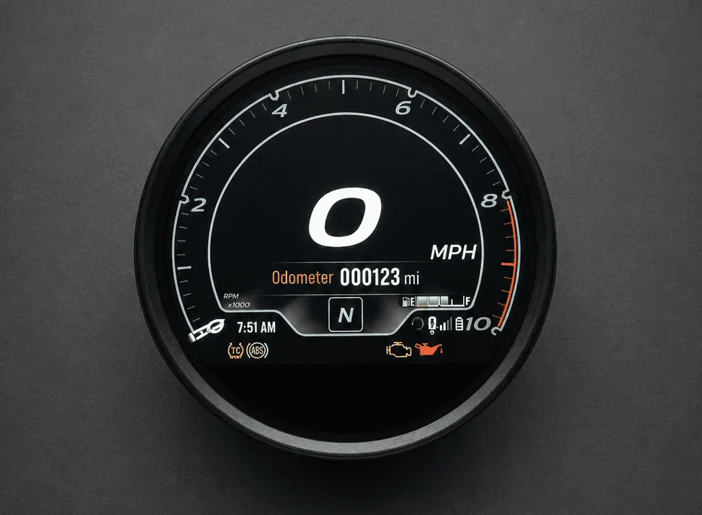
Cleaned reference image used later to guide the final Codex build.
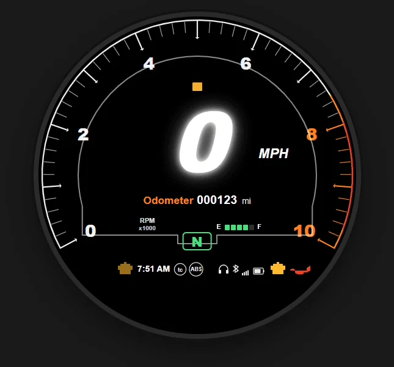
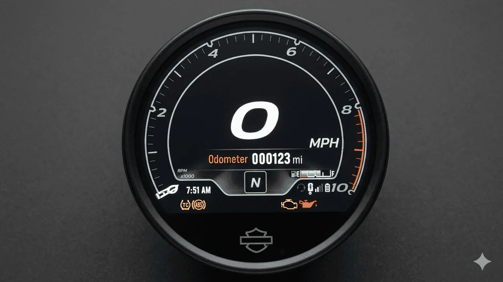
AI is not always good at visual precision, especially when the design depends on specific shapes, spacing, and proportions. A fresh chat, a clear plan, and smaller prompts produced better results than one long overloaded conversation.
Iteration 3 / Codex GPT-5.5
For the third and final iteration, I switched from Claude to Codex, which made the process smoother and gave me more room to experiment. This time, I started with a clearer process. Before adding all the logic, I focused on replicating the home screen as closely as possible.
The first result was better than earlier versions, but it still needed refinement. I realized my reference image was a low-quality YouTube screenshot, so I used Gemini to clean it up and remove the background. After giving Codex the improved reference, the design became much closer.
A method that helped a lot was drawing on screenshots to mark problem areas. When I did not know how to describe a shape, I asked AI what to call it, then used that wording to write more specific prompts.
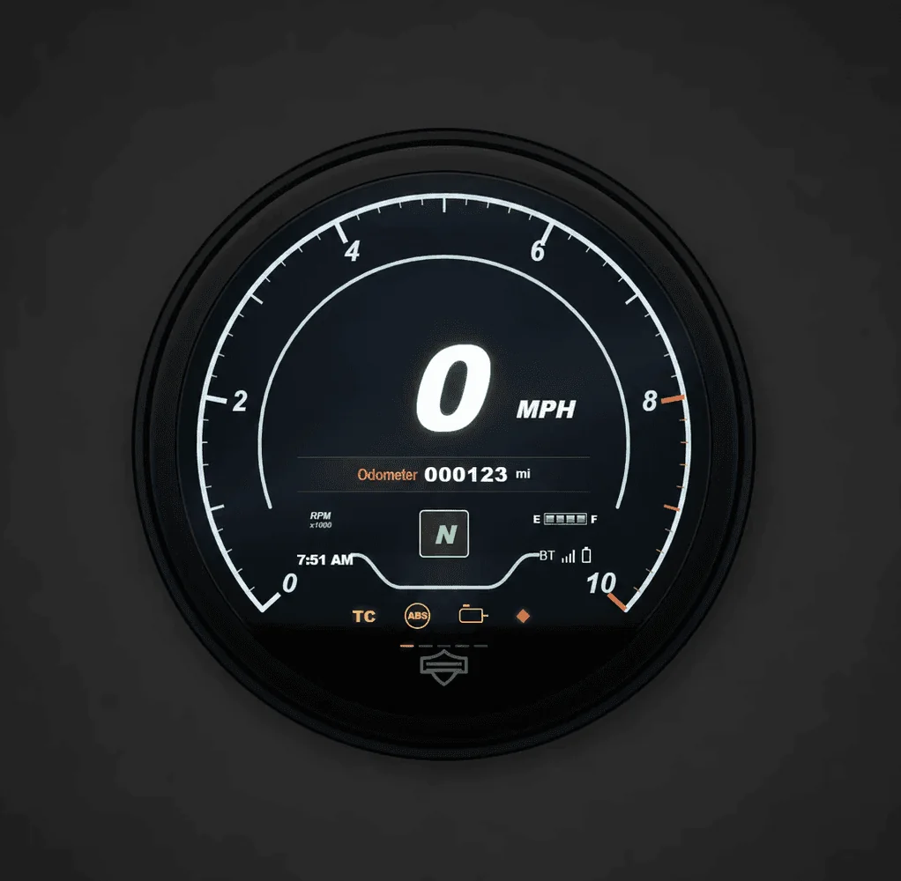
Iteration 3: Home page
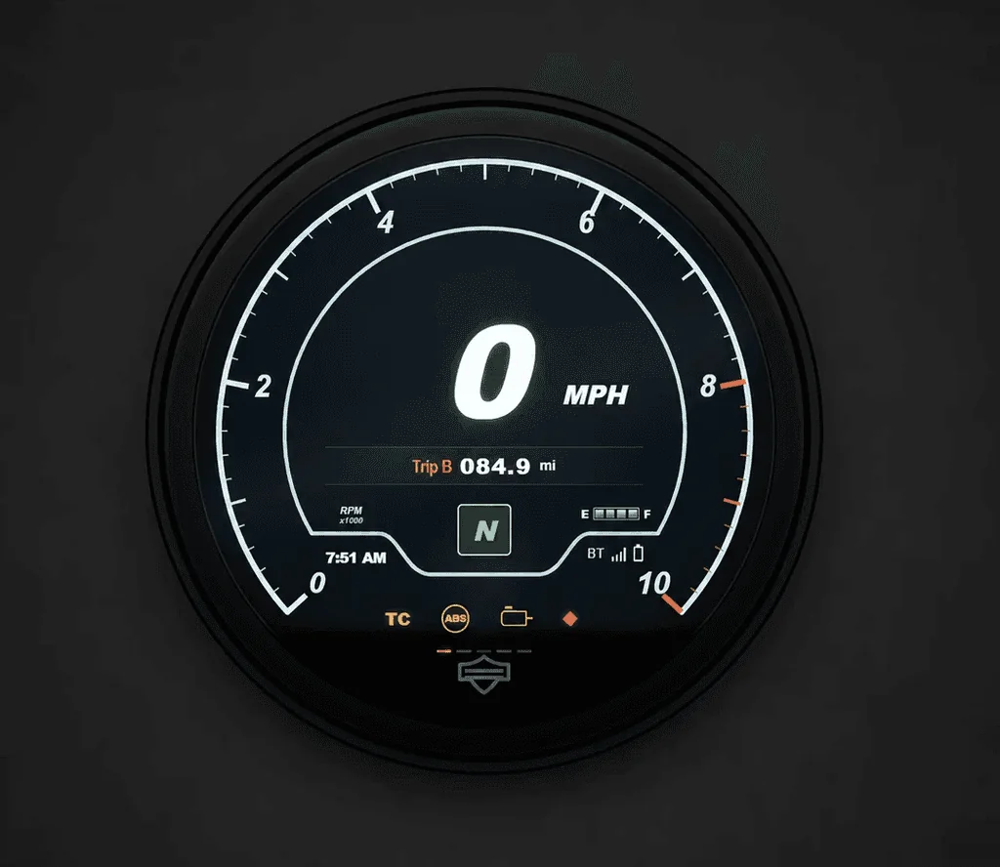
Iteration 3: Home page
Codex gave me the strongest result, but it still required constant direction. The biggest improvement came from combining clear system documents, better reference images, smaller tasks, and visual markup.
Final Prototype
The final prototype included multiple sections, locked states, and prompt overlays. These screenshots show the kinds of states I checked during manual testing.
Press Page to step through the five sections, then switch between Riding and Parked to see the guard rule lock or unlock Settings. Raise Low Fuel or Incoming Call to interrupt the screen with an overlay, or raise both to find an edge case.
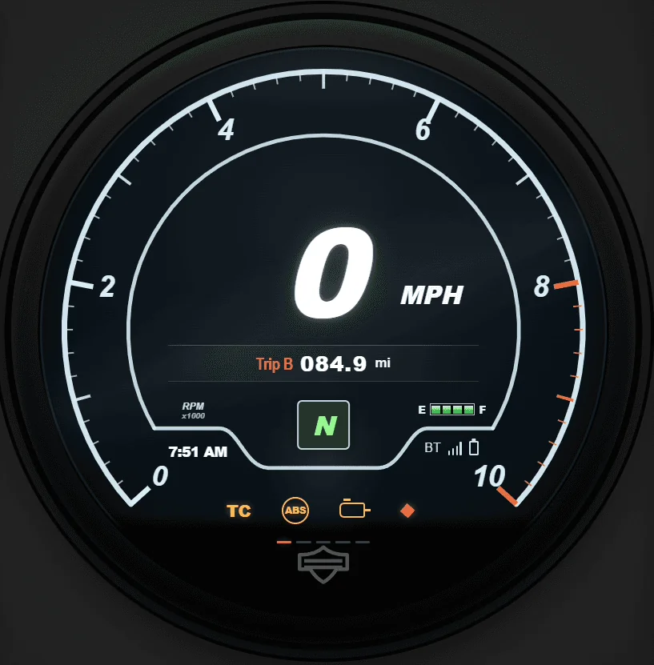
Trip and the D-pad are not simulated, because their behavior is not documented on this page.
Back to Home, riding, no alerts.
Riding. Press Page to move through the sections.
Page steps through the sections. The diagram follows whatever you press.
Home returns to the Home state from anywhere.
This replays the prototype's documented logic using screenshots from the Stage 29 build; it is not the running prototype. The overlay stills were captured over the Home screen, so they show Home underneath whichever section you raise them from.
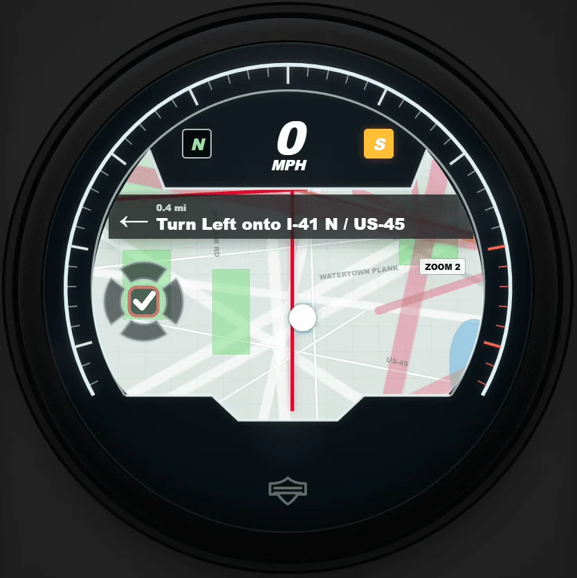
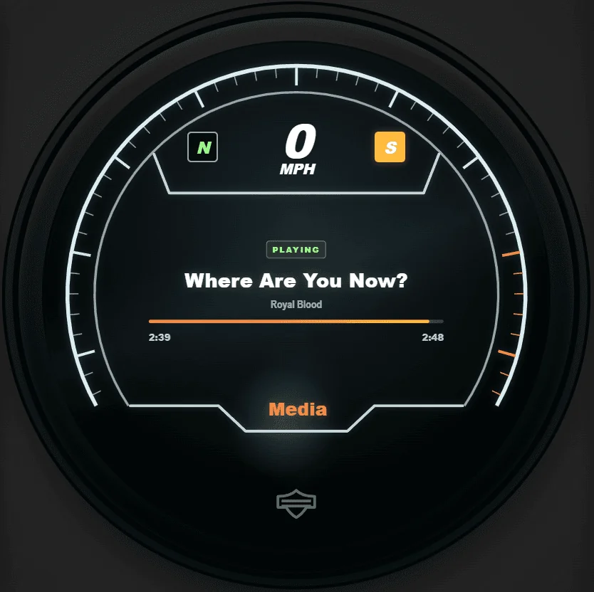
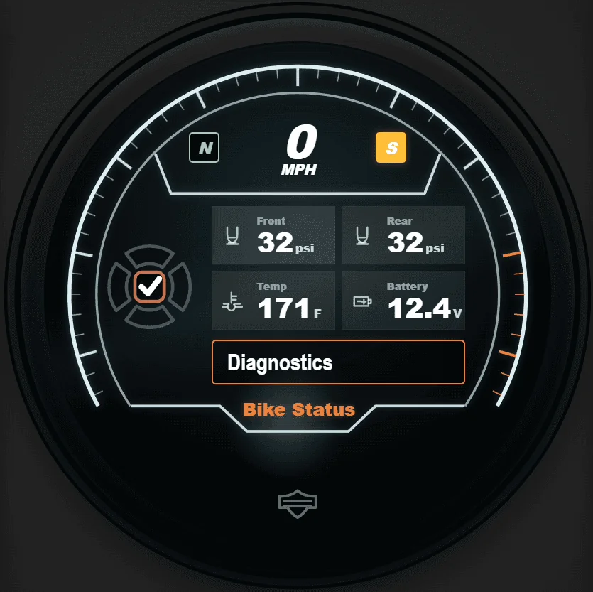
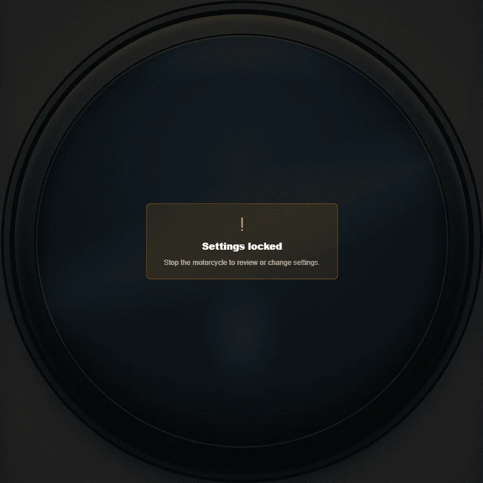
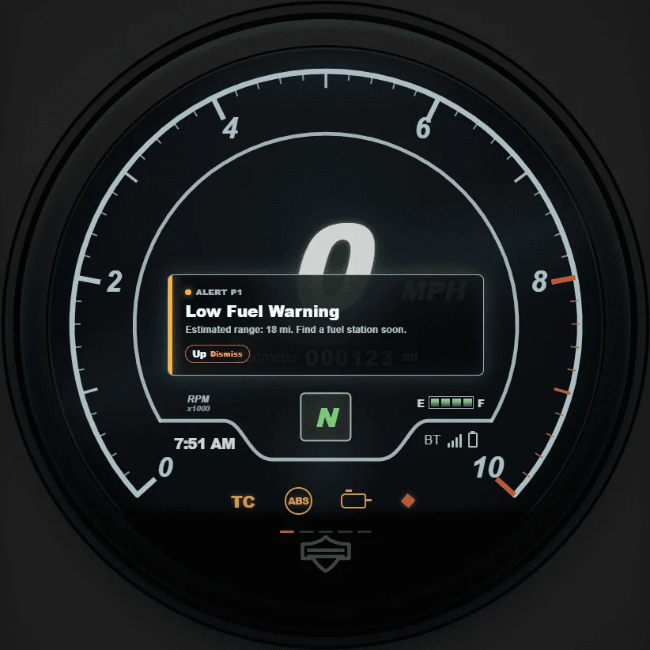
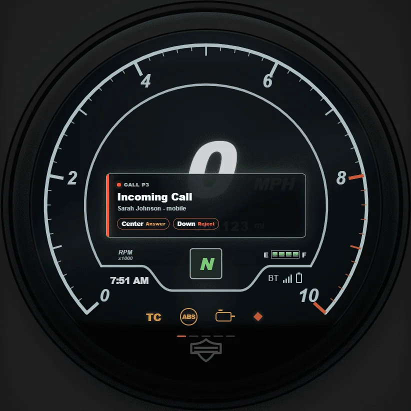
How I Measured The Prototype
To measure the prototype, I used two types of testing: an AI-assisted checklist and my own manual review. The checklist helped me evaluate structure and logic, while manual testing helped me catch visual and interaction problems that were easier to notice by actually using the prototype.
The checklist turned the prototype into measurable criteria instead of relying only on opinion. It helped me check expected logic, states, guard rules, overlays, and page structure.
Manual testing helped me evaluate the prototype like a designer. I could see when shapes overlapped, when the hierarchy felt off, or when something technically worked but did not feel polished.
The checklist was best for structure and logic. Manual testing was best for visual quality, interaction feel, and whether the design matched my intention.
FINAL MANUAL SCORE
88 / 90
97.78% passed on the Stage 29 manual checklist.
Appearance
20 / 21
Manual logic
68 / 69
Failed
2
Untestable
0
Why Vibe Coding Was Harder Here
AI tools perform well with common requests like "build me an app" or "make a landing page." There are millions of those examples in their training data. An embedded motorcycle dashboard is not one of those things.
Claude, Codex, or Figma Make could draw a screen that looked close. What they struggled with was the logic underneath the screen: the rules that decide what should happen when the rider presses the Page button while a Low Fuel warning is active, the vehicle is moving, and the headset is disconnected.
Figma can hide that complexity, because static screens never have to answer "what happens next." HTML has to. That forced me to think like an engineer as much as a designer.
Actual Sportster S reference image used to judge shape, hierarchy, and visual accuracy.
Visual similarity was not enough. The prototype also needed correct logic, and that is where AI needed the most direction from me.
Final Reflection
This project helped me see that UX design is not only about screens. It is also about the logic underneath the screens. Working with AI pushed me closer to how designers and engineers communicate, because I had to describe states, triggers, guard rules, overlays, and edge cases instead of only describing how the UI should look.
I also learned that creative ownership matters more when AI is involved. AI helped me build faster, but I still had to decide what counted as good, what counted as unsafe, what needed to be tested, and what failures should stay visible in the final story.